무선설비기사 (2007-08-05 기출문제)
1과목: 디지털 전자회로
1. 다음 중 연산증폭기를 이용한 아날로그 컴퓨터(analog computer)의 구성요소로 가장 적합하지 않은 것은?
- 적분기
- 미분기
- 합산기
- 비반전증폭기
(정답률: 알수없음)

2. 다음 그림은 어떤 유형의 플리플롭(FF)인가?
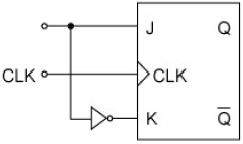
- M/S FF
- RS FF
- JK FF
- D FF
(정답률: 알수없음)
3. 출력전압이 40[V]인 증폭기가 2-j2√3[V]를 궤환시켰다면 궤환율 β는?
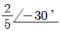
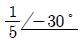
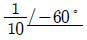
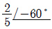
(정답률: 알수없음)
4. 이상적인 연산 증폭기의 구비 조건이 아닌 것은?
- 입력임피던스가 무한대이어야 한다.
- 출력임피던스가 0 이어야 한다.
- CMRR = 1 이어야 한다.
- 전압이득이 무한대이어야 한다.
(정답률: 알수없음)
5. 드레인 접지형 FET증폭기의 특성을 설명한 것 중 옳지 않은 것은?
- 완충증폭기로 적합하다.
- 전압이득은 약 1 이다.
- 입력신호의 전압과 출력전압은 동상이다.
- 입력저항이 매우 작다.
(정답률: 알수없음)
6. 그림과 같은 원 브리지(Wein bridge) 발진회로의 발진주파수를 구하는 식은?
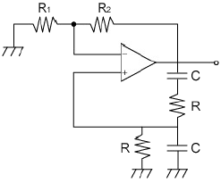
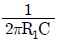
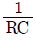
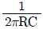
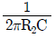
(정답률: 알수없음)
7. 다음 중 L, C, R 직렬공진 회로의 Q는? (단, ωr는 공진 각속도)
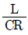
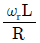
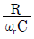
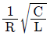
(정답률: 알수없음)
8. 다음 이상적인 연산증폭 회로의 출력전압은?
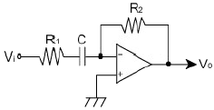
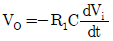
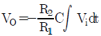
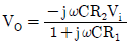
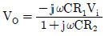
(정답률: 알수없음)
9. 저주파 전력 증폭기의 출력측 기본파 전압이 50[V]이고 제2 및 제3 고조파 전압이 각각 6[V]와 8[V]일 때 전체 왜율은?
- 5[%]
- 10[%]
- 20[%]
- 25[%]
(정답률: 알수없음)
10. 다음 중 평형 변조회로의 주 목적은?
- 변조도를 크게 하기 위함
- 직선성 개선하기 위함
- SSB파를 얻기 위함
- 복조시 포락션 검파를 하기 위함
(정답률: 알수없음)
11. 다음 그림은 무슨 회로인가?
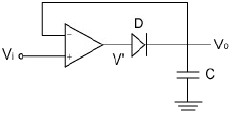
- Voltage follower
- Log amplifier
- Peak detector
- Integrator
(정답률: 알수없음)
12. 다음 중 그림과 같은 구형파를 미분회로에 통과시킬 경우 출력 파형에 가장 가까운 것은?
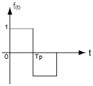
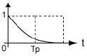
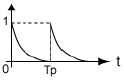
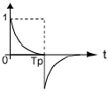
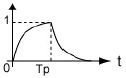
(정답률: 알수없음)
13. 그림은 진폭 Vp가 3[V], 펄스폭 λ가 0.25[ms], 주파수가 1[KHz]의 펄스파이다. 평균치를 지시하는 계기로 측정하면 명 [V]가 되는가?
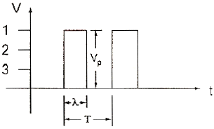
- 0.75
- 1.5
- 2.2
- 3.5
(정답률: 알수없음)
14. 다음 중 시미트 트리거 회로의 응용이 아닌 것은?
- 전압비교 회로
- 구형파 발생
- 쌍안정 회로
- 삼각파 발생
(정답률: 알수없음)
15. 다음 그림과 같은 회로의 전달 특성은? (단, VR1 ＜ VR2)
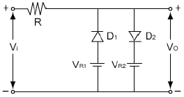
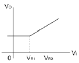
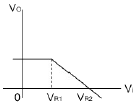
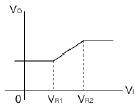
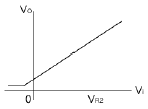
(정답률: 알수없음)
16. 1[MHz]을 입력으로 하는 분주 회로에서 출력을 250[KHz] 로 만들려면 몇 개의 T 플리플롭이 필요한가?
- 1
- 2
- 3
- 4
(정답률: 알수없음)
17. 다음 회로의 기능으로 옳은 것은? (단, A, B는 입력이고 X는 출력)
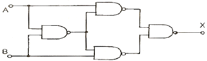
- JK 플리플롭
- T 플리플롭
- Ex-OR
- 가산기
(정답률: 알수없음)
18. Ex-OR와 Ex-NOR에 해당하는 논리식의 상호 변환이 틀린것은?
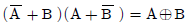
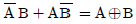
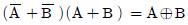
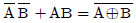
(정답률: 알수없음)
19. 다음 중 플리플롭회로를 활용할 수 없는 것은?
- 주파수분할기
- 주파수체배기
- 2진계수기
- 기억소자
(정답률: 알수없음)
20. 다음 중 대수증폭기의 동작은 무엇에 기인하는가?
- 연산증폭기의 선형 동작
- PN 접합의 대수 특성
- PN 접합의 역방향 항복 특성
- RC 회로이 대수적인 충방전
(정답률: 알수없음)
2과목: 무선통신 기기
21. FM 송신기에서 신호주파수의 높은 쪽을 강하게 변조하여 시스템 S/N 비를 개선하는데 사용되는 회로는?
- Limiter
- IDC
- Pre-emphasis
- APC
(정답률: 알수없음)
22. 그림과 같은 회로가 발진하기 위한 조건은?
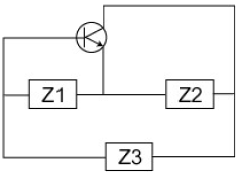
- Z1:유도성, Z2:용량성, Z3:용량성
- Z1:유도성, Z2:용량성, Z3:유도성
- Z1:용량성, Z2:유도성, Z3:유도성
- Z1:용량성, Z2:용량성, Z3:유도성
(정답률: 알수없음)
23. 다음과 같은 단상 반파 정류기회로에서 출력 전력은?
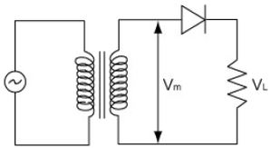
- 입력 전압의 자승에 비례
- 부하 저항의 자승에 비례
- 다이오드 내부저항의 자승에 비례
- 입력 전압의 자승에 반비례
(정답률: 알수없음)
24. 수신기에서 통과대역폭 외에 강력한 방해파가 존재하면 희망파의 식별이 곤란해진다. 이 현상과 관계 없는 것은?
- 감도 억압 효과 특성
- 혼변조 특성
- 잡음제한 감도 특성
- 상호 변조 특성
(정답률: 알수없음)
25. 전압 정재파비가 3인 어떤 급전선에서 진행파 전압이 10V이면 반사파 전압은 몇 V 인가?
- 3
- 3.3
- 5
- 10
(정답률: 알수없음)
26. 레이더에서 최대 탐지 거리를 증대시키는 조치와 관계 없는 것은?
- 공중선에 높게 설치한다.
- 탐지거리를 2배로 증가 시키려면 송신 전력을 2배로 증가 시키면 된다.
- 이득이 큰 공중선을 사용한다.
- 수신기 감도를 증대시킨다.
(정답률: 알수없음)
27. 기본 주파수 Level은 감쇠기(ATT)를 -40[dB]로 놓고 출력 전압을 측정하였더니 0.775[V]이었고, 제2고조파 성분의 Level은 감쇠기(ATT)를 -20[dB]로 놓았을 때 출력 전압이 0.775[V]이었다. 이 때의 왜율은 몇 % 인가?
- 3
- 5
- 10
- 15
(정답률: 알수없음)
28. 어떤 정류기의 부하 양단 평균전압이 600V 이고, 맥동률이 2% 일 때 여기에 포함된 교류분의 최대치는 약 몇 V 인가?
- 6
- 12
- 17
- 24
(정답률: 알수없음)
29. 무선 송신기에서의 완충 증폭기와 관계 없는 것은?
- 발진부 다음 단에 두는 것으로 발진주파수를 부하의 변동으로부터 보호해 준다.
- 증폭이 목적이 아니므로 증폭 방식은 A급 혹은 AB급을 사용하여 안정하게 동작시킨다.
- 일반적으로 이미터 접지를 많이 사용한다.
- 발진부와 완충증폭기의 결합은 안정된 발진을 할 수 있도록 소결합한다.
(정답률: 알수없음)
30. GPS(전세계측위시스템)에 대한 설명 중 틀리는 것은?
- 위성의 궤도는 저궤도이며, 주기는 약 8시간이다.
- GPS는 Global Positioning System의 약어이다.
- 표준 측위를 위한 반송파는 약 1.575 GHz(L1)이다.
- 항상 4개 이상의 위성이 시계 내에 배치된다.
(정답률: 알수없음)
31. DSB 송신기에서 100Hz의 신호파로 변조한 한 개의 측파대가 갖는 전력이 피변조파 전체 전력의
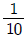
일 때의 변조도는 몇 % 에 가장 가까운가?- 50
- 60
- 70
- 80
(정답률: 알수없음)
32. 송신기에서 스퓨리어스(Spurious) 발사를 억제하기 위한 대책으로 부적합한 것은?
- 전력증폭단을 C급으로 바이어스 한다.
- 공진회로 Q를 높인다.
- 전력증폭단과 공중선회로에 π형 결합회로를 사용한다.
- 급전선에 트랩(Trap)을 설치한다.
(정답률: 알수없음)
33. 다음 SSB 통신방식에 관한 설명 중 옳지 않은 것은? (단, △f는 상ㆍ하측파대의 간격이다.)
- S/N비가 DSB에 비해 개선된다.
- 다단변조로 비대역(△f/fc)을 높인다.
- DSB에 비해 회로구성이 복잡하다.
- 고역통과 여파기(HPF)를 이용하여 원하는 측파대를 만든다.
(정답률: 알수없음)
34. 통신선로 종단에 부하저항(RL) 50Ω을 접속하고 VSWR 을 측정하였더니 그 값이 2 였다. 이 선로의 특성임피던스 ZO는 얼마인가? (단 , ZO ＞ RL 이다.)
- 25Ω
- 50Ω
- 75Ω
- 100Ω
(정답률: 알수없음)
35. 다음 중 PLL주파수 합성기의 분류가 아닌 것은?
- 간접방식
- 주파수 혼합방식
- Prescaler방식
- Pulse swallow방식
(정답률: 알수없음)
36. IC 평형변조기의 특징이 아닌 것은?
- 저전압으로 동작하여 소비전력이 적다.
- 가격이 저렴하다.
- 저이득을 얻을 수 있다.
- 온도에 의한 특성변화가 매우 크다.
(정답률: 알수없음)
37. FM 검파회로 중 주파수 변화를 진폭변화로 바꾸어 검파하는 방법이 아닌 것은?
- Slope 검파기
- Foster-seely 검파기
- Ratio 검파기
- Quadrature 검파기
(정답률: 알수없음)
38. FM 통신방식이 AM 방식에 비해 신호대 잡음비가 좋은 이유는?
- 리미터(Limiter)를 사용하므로
- 클라리파이어(Clarifier)를 사용하므로
- AGC 회로를 사용하므로
- 깊은 변조를 할 수 있으므로
(정답률: 알수없음)
39. ASK와 비교하여 FSK 방식의 특징이 아닌 것은?
- 신호의 진폭이 일정하다.
- 대역폭이 넓다.
- 잡음 및 레벨 변동에 강하다.
- AFC 회로가 필요 없다.
(정답률: 알수없음)
40. M진 PSK 신호의 대역폭 효율이 상대적으로 가장 좋은 것은?
- M=2
- M=4
- M=8
- M=16
(정답률: 알수없음)
3과목: 안테나 공학
41. 무손실 선로의 경우 특성임피던스는 얼마인가? (단, L = 인스턴스, C = 캐패시턴스, R = 저항)
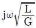
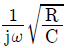
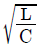
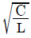
(정답률: 알수없음)
42. 구형도파관의 차단파장 λc, 관내 파장을 λg, 자유공간에서의 파장을 λa 라 할 때 도파관 내에서 전자파의 에너지가 전송되기 위한 조건은?
- λa ＞ λc, λa ＞ λg
- λa ＞ λc, λa ＜ λg
- λa ＜ λc, λa ＞ λg
- λa ＜ λc, λa ＜ λg
(정답률: 알수없음)
43. 지구가 완전도체 평면이라고 할 때 실효고가 20[m]인 수직 접지 안테나에서 주파수가 10[MHz]이고 안테나의 기저부 전류가 5[A]라고 한다. 이 때 10[Km] 떨어진 곳에서의 최대 수신 전계는 약 몇 [mV/m] 인가?
- 63
- 84
- 1⑤
- 126
(정답률: 알수없음)
44. 수직접지 안테나에 정관부하(top loading)를 설치할 경우 얻는 효과로 옳은 것은?
- 고유 주파수가 증대한다.
- 실효고가 감소한다.
- 복사저항이 감소한다.
- 고각도 복사를 억제한다.
(정답률: 알수없음)
45. 주파수가 다른 2개의 전파가 같은 전리층의 한점을 두 전파가 지나갈 때 복사전력이 강한 쪽의 전파에 의하여 다른 쪽의 전파가 변조되어 강한 쪽의 전파가 혼입되는 현상을 무엇이라 하는가?
- Luxemburg effect
- Control point
- Antipode effect
- Magnetic storm
(정답률: 알수없음)
46. 단파대 통신에서 주간보다 야간에 낮은 주파수를 사용하는 이유로 가장 타당한 것은?
- 전리층에서의 전파 흡수가 작으므로
- 주간보다 야간의 전자밀도가 낮으므로
- 주간보다 야간의 전자밀도가 커지므로
- 낮은 주파수가 전파의 회절이 강하므로
(정답률: 알수없음)
47. 반파장 다이폴(dipole) 안테나의 실효길이는?
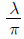
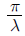
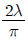
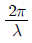
(정답률: 알수없음)
48. 다음 중 공전(空電)의 특징이 아닌 것은?
- 주로 초단파 통신에 방해를 주며 200[KHz] 이하에서는 문제가 되지 않는다.
- 장파대의 공전은 겨울보다 여름에 자주 나타난다.
- 공전은 적도 부근에서 가장 격렬히 발생한다.
- 단파대에서는 한밤중 전후에 최대이고 정오경에 최소가 된다.
(정답률: 알수없음)
49. 다음의 동조급전 방식에 대한 설명 중 옳은 것은?
- 송신기와 안테나 사이의 거리가 멀수록 많이 사용한다.
- 전압급전일 때 직렬공진의 급전회로를 사용하려면 급전선의 길이를 λ/4의 기수배로 사용한다.
- 전류급전일 때 병렬공진의 급전회로를 사용하려면 급전선의 길이를 λ/4의 우수배로 사용한다.
- 임피던스 정합회로를 사용하므로 진행파가 급전된다.
(정답률: 알수없음)
50. 위성통신장치는 송수신기가 한 시스템 내에 설치되어있다. 송수신할 때 동일한 주파수를 사용하지 않는 이유로 가장 타당한 것은?
- 강한 송신전력이 수신기에 영향을 미치기 때문에
- 송신안테나의 이득이 비교적 낮기 때문에
- 수신안테나가 매우 낮은 레벨의 신호까지도 감지해야 하므로
- 지상에서 발사된 전파가 위성에 도달하는 동안 세력이 약해지므로
(정답률: 알수없음)
51. 전리층의 제2종 감쇠에 대한 설명 중 틀린 것은?
- 전리층에서 반사할 때에 받는 감쇠이다.
- 감쇠량은 전자밀도에 반비례 한다.
- 감쇠량은 수직으로 입사할수록 작아진다.
- 감쇠량은 주파수가 높을수록 커진다.
(정답률: 알수없음)
52. 제펠린(zeppelin)안테나에 대한 설명 중 틀린 것은?
- 전압급전 방식을 사용한다.
- 평형형 동조급전방식을 사용한다.
- 수신기 급전회로에서 직렬공진시 급전선의 길이는 λ/2의 우수배로 한다.
- 수평면내 지향성은 8자형 패턴을 가진다.
(정답률: 알수없음)
53. 3개의 도체에 사용하여 3단의 폴디드(folded) 안테나를 구성하 경우 복사저항은 약 얼마인가?
- 73[Ω]
- 110[Ω]
- 292[Ω]
- 658[Ω]
(정답률: 알수없음)
54. 다음 방식 중 원편파를 발생할 수 없는 것은?
- 전자나팔에 원편파 변환기를 사용한다.
- 원추형 전자나팔에 렌즈형 안테나를 사용한다.
- 엔드 파이어 헤리컬(둥 fire helical) 안테나를 gi용 한다.
- 직교 다이폴 안테나에 90도의 위상차를 두어 급전한다.
(정답률: 알수없음)
55. 안테나의 복사 저항이 25[Ω]이고 손실 저상이 5[Ω]일 때 이 안테나의 복사 효율약 얼마인가?
- 16%
- 20%
- 30%
- 83%
(정답률: 알수없음)
56. 장ㆍ중파대의 송신 안테나의 접지 방식 중 대전력 방송국에 가장 적합한 것은?
- 심굴식 접지
- 방사상 접지
- 다중 접지
- 카운터 포이즈
(정답률: 알수없음)
57. 다움 중 파라볼라(parabola) 안테나의 특징이 아닌 것은?
- 비교적 소형이고 구조가 간단하다.
- 지향성이 예리하고 이득이 높다.
- 부엽(side lobe)이 비교적 적다.
- 광대역 임피던수 정합이 어렵다.
(정답률: 알수없음)
58. 비유전율이 9, 비투자율이 1인 매질 내를 전파하는 전자파의 속도는 자유공간을 전파할 때의 속도의 몇 배인가?
- 2
- 3
- 1/2
- 1/3
(정답률: 알수없음)
59. 도약거리에 대한 설명 중 틀린 것은?
- 단파에서의 불감지대와 연계된다.
- 사용주파수가 높을수록 크게 된다.
- 전리층의 겉보기 높이에 반비례한다.
- 사용주파수가 임계 주파수 보다 높을 때 생긴다.
(정답률: 알수없음)
60. TV 수신용 광대역 야기 안테나의 종류가 아닌 것은?
- 스롯형 안테나
- 코니컬형 안테나
- U 라인형 안테나
- In 라인형 안테나
(정답률: 알수없음)
4과목: 무선통신 시스템
61. 다음 중 AM 통신방식과 비교한 FM 통신방식의 장단점을 설명한 것으로 가장 관계가 먼 것은?
- 신호대 잡음비가 개선된다.
- 레벨 변동의 영향이 적다
- 점유 주파수 대폭이 크다.
- Fading의 영향이 많다.
(정답률: 알수없음)
62. 마이크로파에서 X 밴드와 S 밴드의 비교 설명이 틀린것은?
- 비, 눈, 안개의 영향은 높은 밴드 일수록 크다.
- 예민한 지향성을 얻기 위해서는 X 밴드를 사용한다.
- 원거리 통신에는 S 밴드를 사용한다.
- 안테나가 작을 경우에는 S 밴드가 효율적이다.
(정답률: 알수없음)
63. 다음 중 지구국 안테나의 성능지수(G/T)를 향상시키는 방법으로 가장 적합한 것은? (단, LF : 급전계 손실, Ta : 안테나 복사계의 잡음온도, Tr : 저잡음 증폭기 이후의 등가잡음 온도이다.)
- LF 는 작게, Ta 는 크게 해야 한다.
- LF 는 작게, Tr 은 크게 해야 한다.
- LF, Ta, Tr 을 모두 크게 해야 한다.
- LF, Ta, Tr 을 모두 작게 해야 한다.
(정답률: 알수없음)
64. 입력측의 S/N = 100, 출력측의 S'/N' = 10 인 저주파 증폭기의 잡음지수 NF(Noise Figure)는 몇 dB 인가?
- 1
- 10
- 20
- 100
(정답률: 알수없음)
65. 레이더에서 마이크로파(microwave)를 이용하는 이유가 아닌 것은?
- 분해능(resolution)을 좋게 할 수 있다.
- 직접파 방식이므로 정확한 거리의 측정이 가능하다.
- 작은 목표에도 잘 반사한다.
- 전파의 회절현상을 이용하여 원거리의 목표를 쉽게 측정할 수 있다.
(정답률: 알수없음)
66. 마이크로파 무선중계방식 중에서 검파중계방식에 대한 설명으로 적합하지 않은 것은?
- 펄스통신에서는 S/N 비가 좋다.
- 중간 중계소에서 회선의 분기, 삽입이 가능하다.
- 중계국이 많은 경우에 유리하다.
- 복조기가 있어야 한다.
(정답률: 알수없음)
67. 이동통신방식과 비교한 주파수공용방식(trunked radio system)의 특징으로 적합하지 않은 것은?
- 주로 어떤 집단에 소속된 여러 가입자가 함께 통화 하는 그룹 호출(call)형태이다.
- 일반적어로 통화시간이 짧다.
- 서비스구역은 소구역화로 한다.
- press to talk 방식에 의한 상호통신이다.
(정답률: 알수없음)
68. 마이크로파의 전파 특성을 잘못 설명한 것은?
- 주파수가 높기 때문에 지표파는 감쇄가 심하다.
- 직접파와 대지 반사파에 의하여 수신전계가 결정된다.
- 기하학적 가시거리보다 약간 더 멀리까지 전달된다.
- 지구의 전리층에 의해 반사되는 성질을 갖는다.
(정답률: 알수없음)
69. 다음 중 동일 조건에서 오류확률이 가장 낮은 것은?
- FSK
- DPSK
- ASK
- BPSK
(정답률: 알수없음)
70. WLL이 이동통신망과 다른 점으로 적합하지 않은 것은?
- 전파경로 손실이 이동통신망에 비하여 작다.
- 다중경로에 의한 페이딩의 영향이 적다.
- 주로 전리층 반사파를 활용한다.
- 주파수 재사용거리를 줄일 수 있다.
(정답률: 알수없음)
71. 아날로그 시스템과 비교한 디지털 셀룰러 시스템의 특징이 아닌 것은?
- 통화 품질 향상
- 스펙트럼의 효율적 사용
- 통신 보안 용이
- 장치의 대형화
(정답률: 알수없음)
72. 다음 위성회선의 다중접속방식 중에서 송신 전력을 낮게 하여도 수신이 가능할 뿐만 아니라, 보안통신에도 가장 유리한 것은?
- TDMA
- FDMA
- SDMA
- CDMA
(정답률: 알수없음)
73. 다음 중 위성 통신에서 주로 사용하는 주파수 대역은?
- HF
- VHF
- UHF
- SHF
(정답률: 알수없음)
74. 저주파에서 가장 현저한 잡음으로 주파수가 증가함에 따라 감소하는 잡음은?
- 산탄 잡음
- 열 잡음
- 마이크로포닉 잡음
- 플리커 잡음
(정답률: 알수없음)
75. 60[dBW]의 EIRP를 가진 지구국에서 10000[Km] 떨어져 있는 위성을 향하여 6[GHz]의 전파를 발사할 때 위성에서의 수신 전력은 약 몇 [dBW] 인가? (단, 위성 안테나의 이득은 16[dB], 자유공간전송 손실은 (92.5 + 20 log f[GHz] + 20 log d[Km]) [dB]이다.)
- -80
- -104
- -112
- -124
(정답률: 알수없음)
76. 이동통신시스템에서 인접 셀과의 중심간격이 가장 큰 형식의 셀은?
- 정육각형
- 정사각형
- 정삼각형
- 모두 같음
(정답률: 알수없음)
77. CDMA 방식의 중요한 특징 중에 하나인 레이크 수신기(Rake Receiver)에 대한 설명으로 가장 적합한 것은?
- 전파의 다중경로 현상으로 수신신호의 진폭과 위상의 변화가 나타난다.
- 다양한 경로로 수신된 서로 시간차가 있는 신호를 분리해 낼 수 있다.
- 기지국의 출력 변동을 방지하기 위하여 기준출력 값과의 차를 피드백하여 출력 이득을 조정한다.
- 기지국의 RF 신호를 제3의 전송매체를 통해 원하는 원격지역에 전송하여 다시 RF 신호로 재생한다.
(정답률: 알수없음)
78. 서비스 지역내에 통화 용량(트래픽 처리용량)을 증가시키기 위한 방법으로 적합하지 않은 것은?
- 기지국의 채널 증설
- 추가 주파수 스펙트럼 사용
- 동적 주파수 할당
- 대규모 셀의 구성
(정답률: 알수없음)
79. 다음 중 OSI 7계층 중 사용자의 추상구문을 전송구문으로 변환하고, 다시 역변환하는 기능을 제공하며, 데이터 압축과 암호화 등을 수행하는 계층은?
- 데이터링크계층
- 네트워크계층
- 세션계층
- 표현계층
(정답률: 알수없음)
80. OFDM(Orthogonal Frequency Division Multiplexing) 방식의 장점에 해당하지 않는 것은?
- 혼신에 대해 강하다.
- 낮은 속도의 다중 채널에 정보를 전송할 수 있다.
- 스펙트럼 대역의 사용 효율을 최대한 높일 수 있다.
- 송ㆍ수신단간 반송파 주파수의 옵셋이 존재할 경우에도 신호대 잡음비가 크게 감소하지 않는다.
(정답률: 알수없음)
5과목: 전자계산기 일반 및 무선설비기준
81. 다음은 중앙처리장치 내의 하드웨어요소와 그 기능을 짝지은 것이다. 서로 맞지 않는 것은?
- Register - 기억기능
- Accumulator - 제어기능
- ALU - 연산기능
- Internal bus - 전달기능
(정답률: 알수없음)
82. (-9)10를 부호화된 2의 보수(signed 2's complement)로 표시한 것은?
- 0001001
- 1001001
- 1110111
- 1110110
(정답률: 알수없음)
83. 다음 중 문자의 표시와 관계 없는 코드는?
- BCD 코드
- EBCDIC 코드
- 그레이(Gray) 코드
- ASCII 코드
(정답률: 알수없음)
84. 컴퓨터의 CPU가 명령을 수행하기 위하여 명령어를 기억 장치에서 꺼내오는 일과 관계 깊은 사이클의 명칭은?
- Operation Cycle
- Instruction Cycle
- Fetch Cycle
- Direct Cycle
(정답률: 알수없음)
85. ASCII 코드의 존 비트와 디지트 비트의 구성으로 옳게 표시한 것은?
- 존 비트 : 4, 디지트 비트 : 3
- 존 비트 : 3, 디지트 비트 : 4
- 존 비트 : 4, 디지트 비트 : 4
- 존 비트 : 3, 디지트 비트 : 3
(정답률: 알수없음)
86. 다음 중 컴파일러 언어가 아닌 것은?
- C
- Perl
- COBOL
- PL/1
(정답률: 알수없음)
87. 가상 메모리(virtual memory)에서 페이지 폴트(page fault)가 일어났을 때 주메모리(main memory)내의 참조회수가 가장 작은 페이지를 교체하는 방법은?
- LRU(Least Recently Used)
- LFU(Least Frequently User)
- NUR(Not Used Recently)
- FIFO(First In First Out)
(정답률: 알수없음)
88. 다음 중 deadlock의 발생 조건이 아닌 것은?
- 선취 조건
- 상호 배제 조건
- 환형 대기 조건
- 점유와 대기 조건
(정답률: 알수없음)
89. 마이크로 사이클 타이(Micro cycle time)에서 동기 고정식의 특징에 해당하는 것은?
- 모든 마이크로 오퍼레이션 수행 기간이 비슷할 때 유리하다.
- 마이크로 오퍼레이션 수행 기간의 차이가 클 때 유리하다.
- CPU의 시간을 효율적으로 이용한다.
- CPU가 기억 장치로부터 명령을 읽어 내기 위해서는 2개의 마이크로 사이클이 소요된다.
(정답률: 알수없음)
90. 다음 중 운영체제의 제어 프로그램에 해당하는 것은?
- 데이터 관리 프로그램
- 언어 처리 프로그램
- 서비스 프로그램
- 문제 처리 프로그램
(정답률: 알수없음)
91. 전자파장해기기의 전자파장해 방지기준은 누가 정하여 고시하는가?
- 국무총리
- 정보통신부장관
- 전파연구소장
- 전파진흥원장
(정답률: 알수없음)
92. 해안지구국의 개설허가의 유효기간은?
- 1년
- 2년
- 3년
- 5년
(정답률: 알수없음)
93. 다음 중 형식등록을 하여야 하는 무선설비의 기기는?
- 네비텍스 수신기
- 경보자동 전화장치
- 라디오부이의 기기
- 선박국용 무선방위측정기
(정답률: 알수없음)
94. 535KHz 초과 1606.5KHz 이하의 전파를 사용하는 방송국의 주파수 혀용편차는 다음 중 어느 것인가?
- 5Hz
- 10Hz
- 20Hz
- 50Hz
(정답률: 알수없음)
95. 공중선 전력의 표시 방법 중 평균전역은 어느 것으로 표시하는가?
- PX
- PR
- PY
- PZ
(정답률: 알수없음)
96. 다음 중 전파법에서 규정하는 용어의 정의로 적합하지 않은 것은?
- 전파라 함은 인공적인 유도없이 공간에 퍼져 나가는 전자파로서 국제전기통신연합이 정한 법위안의 주파수를 가진 것을 말한다.
- 주파수 분배라 함은 특정한 주파수를 이용할 수 있는 권리를 특정인에게 부여하는 것을 말한다.
- 무선국이라 함은 무선설비와 무선설비를 조작하는 자의 총체를 말한다.
- 주파수지정이라 함은 하가 또는 신고에 의하여 개설하는 무선국이 이용할 특정한 주파수를 지정하는 것을 말한다.
(정답률: 알수없음)
97. 정보통신부장관이 주파수 분배 시 고려하여야 할 사항이 아닌 것은?
- 전파이용기술의 발전추세
- 민간인의 주파수 사용동향
- 주파수의 이용현황 등 국내의 주파수 이용여건
- 전파를 이용하는 서비스에 대한 수요
(정답률: 알수없음)
98. 다음 중 송신설비의 기술기준에 포함되지 않는 사항은?
- 통신품질
- 송신설비의 전력
- 주파수편차의 허용치
- 스퓨리어스 발사의 허용치
(정답률: 알수없음)
99. 아마추어국의 송신설비의 공중선 전력은 무엇으로 표시하는가?
- 첨두전력
- 평균전력
- 규격전력
- 반송파전력
(정답률: 알수없음)
100. 다음 중 정보통신기기인증규칙에 적용되지 않는 경우는?
- 형식등록을 하여야 할 경우
- 형식검정을 받아야 할 경우
- 전자파적합등록을 하여야 할 경우
- 전자파흡수율측정을 하여야 할 경우
(정답률: 알수없음)